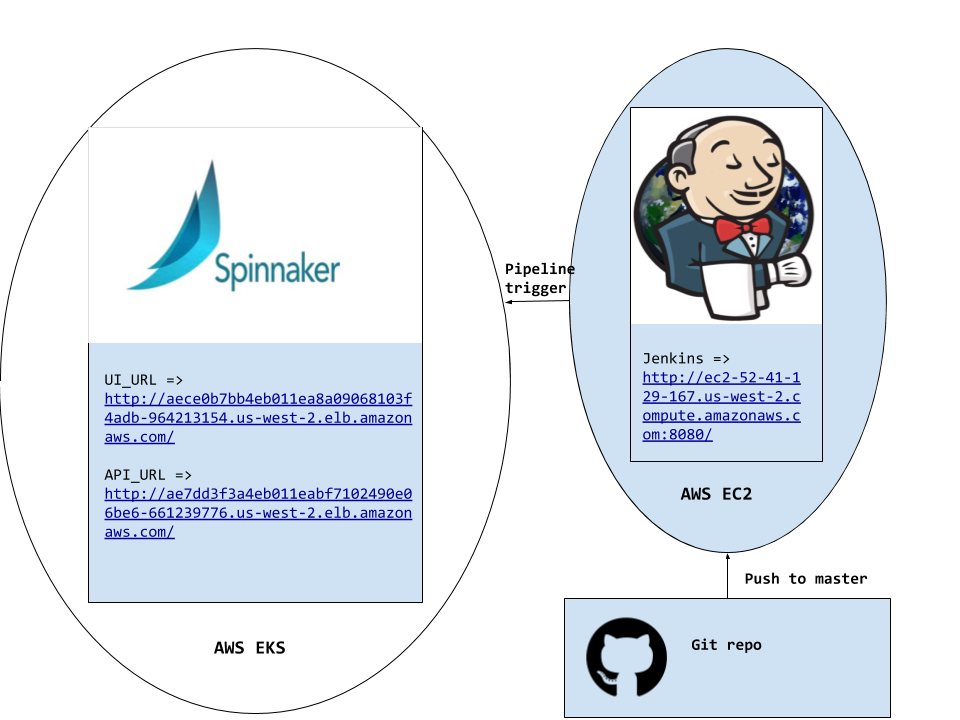

Get Started
This tutorial will walk you through a distributed Spinnaker installation using Amazon Elastic Kubernetes Service (EKS). Once Spinnaker is setup, we will then create a simple continuous integration pipeline service from Jenkins
(Don't worry if words like distributed or piplelines don't make sense. We will get to them as we go along)
